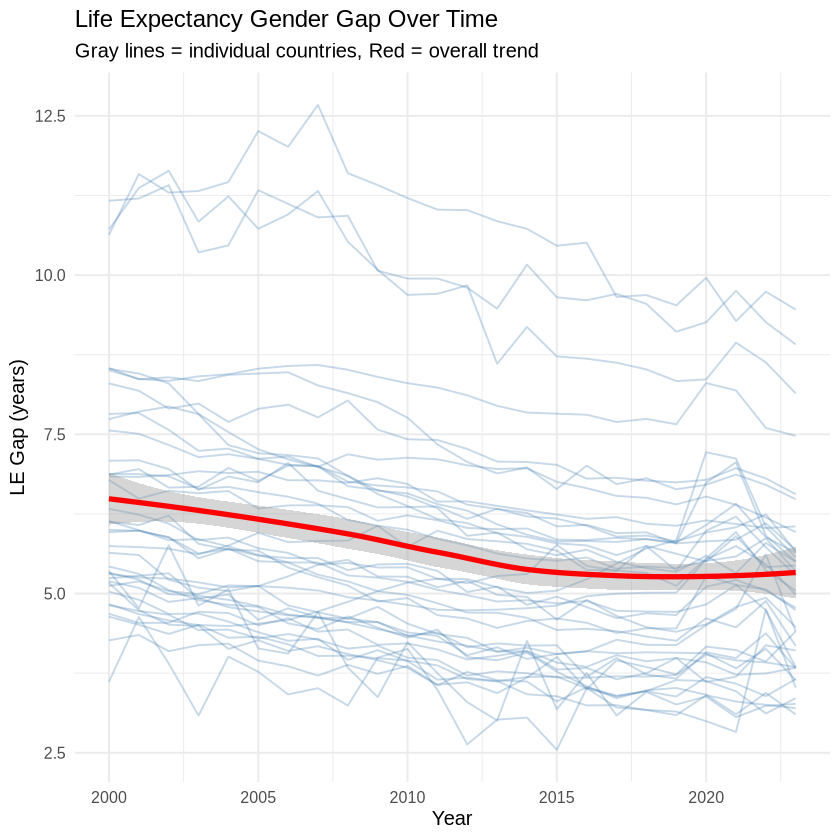
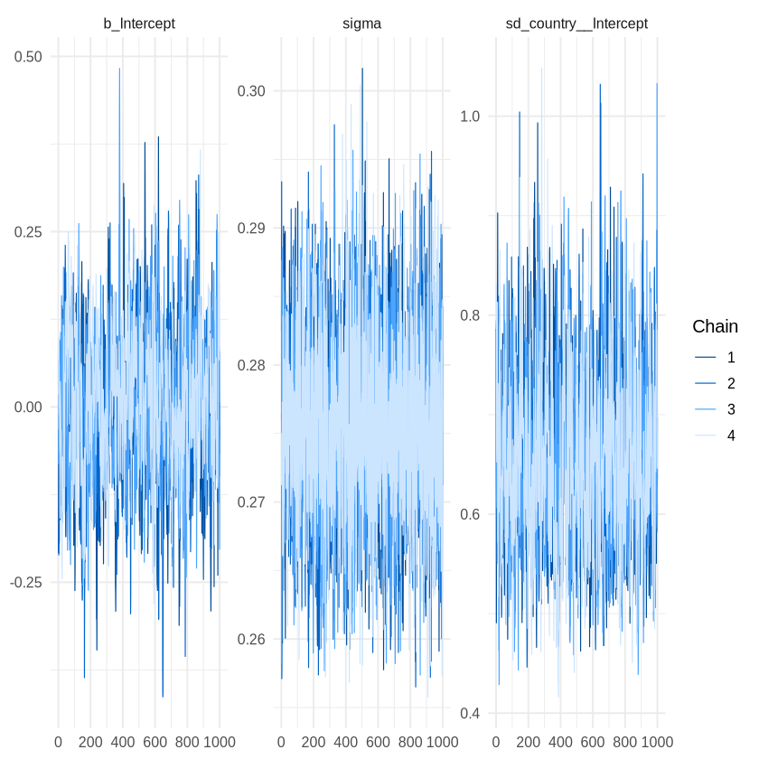
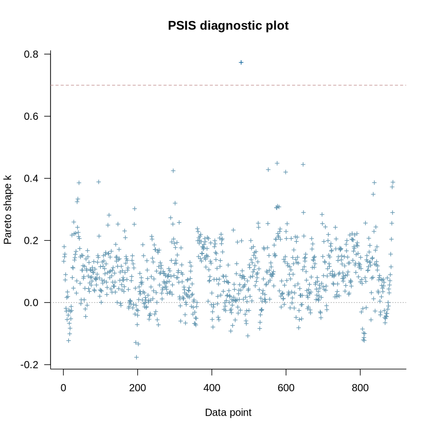
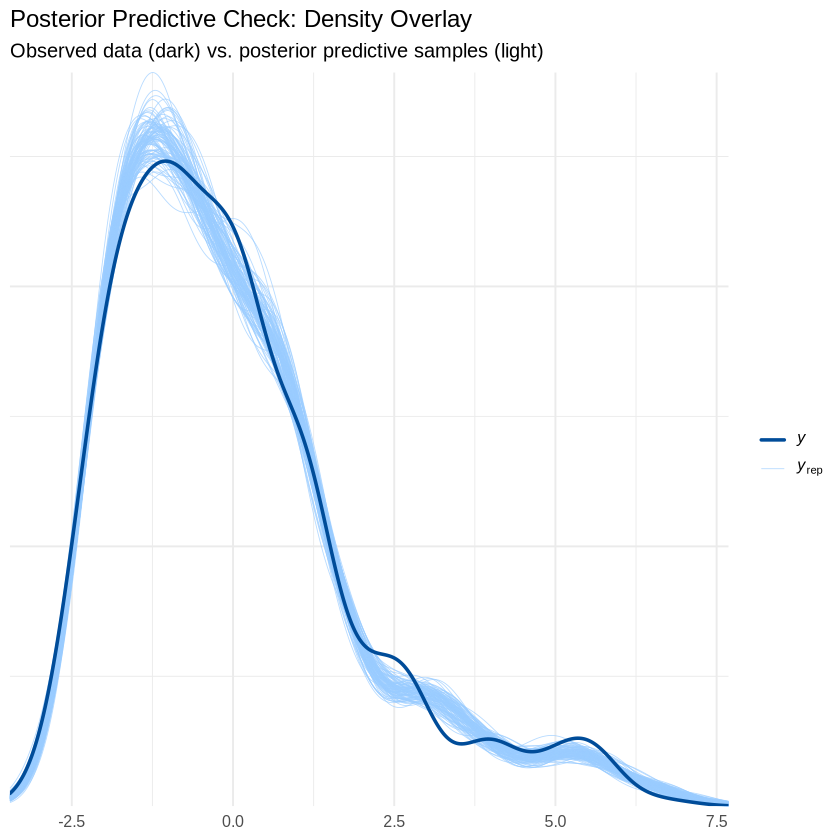
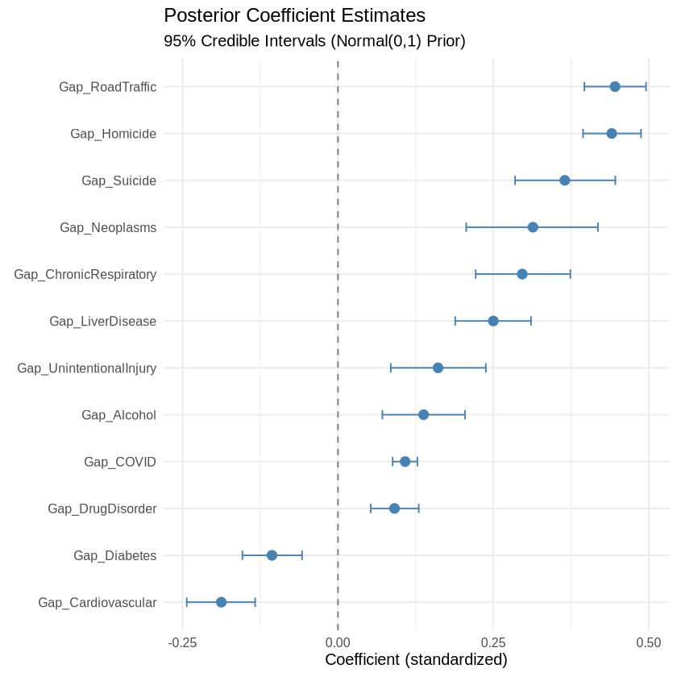
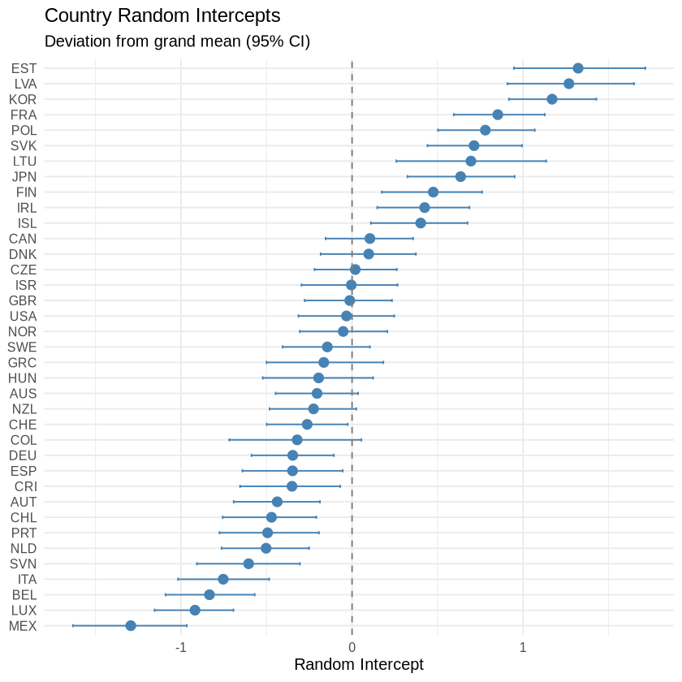
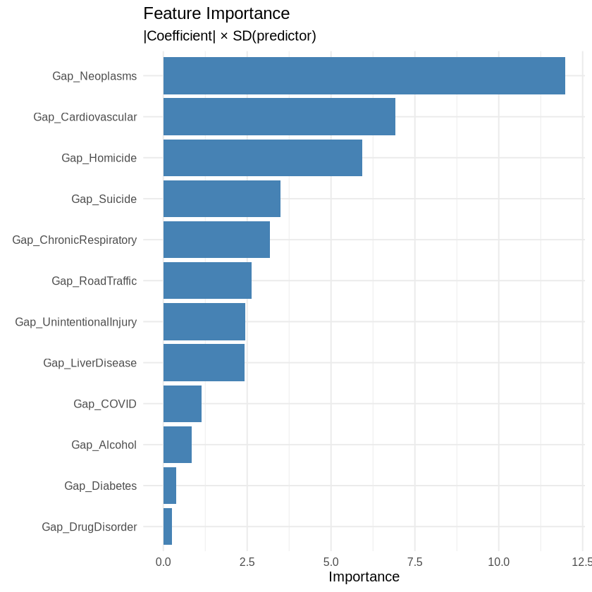

library(tidyverse)
library(brms)
library(bayesplot)
library(loo)
library(tidybayes)
library(posterior)
library(patchwork)
library(jsonlite)
# Set theme
theme_set(theme_minimal(base_size = 12))
# Set bayesplot color scheme
color_scheme_set("brightblue")
# For reproducibility
set.seed(42)
# Use all available cores
options(mc.cores = parallel::detectCores())Life Expectancy Gender Gap - Bayesian Hierarchical Panel Model
Overview
This notebook implements a Bayesian hierarchical panel model to analyze Life Expectancy gender gaps, replicating the PyMC model in bayesian_model_py.md using brms.
Model Structure: - Random intercepts by country (37 OECD countries, Turkey excluded) - Shared slopes for 12 Gap predictors - Panel data: ~888 observations (37 countries × 24 years) - Preprocessing: Standardized predictors (mean=0, std=1, population std), centered target - Priors: Normal(0,1) for predictor coefficients
Data source: Panel data from process.ipynb (CSV format)
Setup
# Source utility functions
source("utils.R")
# Initialize logging
log_path <- "logs/bayesian_model_r_brms.txt"
init_logging(log_path, "BAYESIAN PANEL MODEL - LIFE EXPECTANCY GENDER GAPS (R/brms)")Logging to: logs/bayesian_model_r_brms.txt Load Data
The panel dataset is created by process.ipynb and saved to CSV.
# Load panel data from CSV (created by process.ipynb)
csv_path <- "../data/panel_le.csv"
if (!file.exists(csv_path)) {
stop("Panel data not found at ", csv_path, "\n",
"Please run process.ipynb first to create the panel data.")
}
panel <- read_csv(csv_path, show_col_types = FALSE)
log_and_print(paste0("\n", paste0(rep("=", 80), collapse = "")))
log_and_print("PANEL DATA LOADED")
log_and_print(paste0(rep("=", 80), collapse = ""))
log_and_print("Source: %s", csv_path)
log_and_print("Shape: %d x %d", nrow(panel), ncol(panel))
log_and_print("Countries: %d", n_distinct(panel$country))
log_and_print("Years: %d-%d", min(panel$Year), max(panel$Year))
log_and_print("Missing values: %d", sum(is.na(panel)))
log_and_print(paste0(rep("=", 80), collapse = ""))
================================================================================
PANEL DATA LOADED
================================================================================
Source: ../data/panel_le.csv
Shape: 888 x 27
Countries: 37
Years: 2000-2023
Missing values: 0
================================================================================ glimpse(panel)Rows: 888
Columns: 27
$ country <chr> "AUS", "AUS", "AUS", "AUS", "AUS", "AUS", "AUS…
$ Year <dbl> 2000, 2001, 2002, 2003, 2004, 2005, 2006, 2007…
$ LE_gap <dbl> 5.3258, 5.2164, 4.9902, 4.9644, 4.9009, 4.8024…
$ Mid_Alcohol <dbl> 1.683177, 1.633888, 1.692577, 1.683623, 1.6654…
$ Gap_Alcohol <dbl> 2.103379, 2.035051, 2.040075, 2.005382, 1.9226…
$ Mid_Suicide <dbl> 13.62992, 13.24545, 12.52106, 11.87477, 11.535…
$ Gap_Suicide <dbl> 16.00476, 15.13518, 14.07272, 13.44912, 13.224…
$ Mid_Homicide <dbl> 1.7337785, 1.6848733, 1.5879957, 1.3851044, 1.…
$ Gap_Homicide <dbl> 1.026409395, 1.058053696, 1.014457891, 0.99046…
$ Mid_RoadTraffic <dbl> 10.634210, 10.228433, 9.767470, 9.220344, 8.91…
$ Gap_RoadTraffic <dbl> 9.100231, 8.891709, 8.444396, 8.019510, 8.0333…
$ Mid_Cardiovascular <dbl> 255.5133, 249.6689, 249.1729, 240.4196, 231.83…
$ Gap_Cardiovascular <dbl> -7.962612, -7.617639, -7.899473, -8.019690, -6…
$ Mid_Diabetes <dbl> 15.40863, 15.69120, 16.46777, 16.95264, 17.207…
$ Gap_Diabetes <dbl> 2.3200154, 2.6930284, 2.9848201, 2.8539544, 2.…
$ Mid_Neoplasms <dbl> 202.0906, 203.9027, 206.4924, 205.7116, 205.73…
$ Gap_Neoplasms <dbl> 55.43607, 54.08066, 53.94554, 54.23148, 56.302…
$ Mid_ChronicRespiratory <dbl> 40.36706, 39.77088, 40.68531, 39.18503, 37.758…
$ Gap_ChronicRespiratory <dbl> 13.900258, 12.465605, 11.827239, 10.164146, 8.…
$ Mid_LiverDisease <dbl> 6.701960, 6.731144, 7.122281, 7.207535, 7.2493…
$ Gap_LiverDisease <dbl> 5.152012, 5.404421, 5.530302, 5.868847, 5.9473…
$ Mid_UnintentionalInjury <dbl> 13.37607, 12.96512, 13.95145, 14.46887, 15.340…
$ Gap_UnintentionalInjury <dbl> 2.6863957, 2.2821125, 2.5095636, 2.9177284, 2.…
$ Mid_DrugDisorder <dbl> 5.334618, 4.523167, 4.055073, 3.865444, 3.7614…
$ Gap_DrugDisorder <dbl> 4.903885, 3.717160, 3.111505, 2.889375, 2.8073…
$ Mid_COVID <dbl> 0.000000, 0.000000, 0.000000, 0.000000, 0.0000…
$ Gap_COVID <dbl> 0.000000000, 0.000000000, 0.000000000, 0.00000…# Data summary
log_and_print("Panel Data Summary:")
log_and_print(" Observations: %d", nrow(panel))
log_and_print(" Countries: %d", n_distinct(panel$country))
log_and_print(" Years: %d-%d", min(panel$Year), max(panel$Year))
log_and_print(" Missing values: %d", sum(is.na(panel)))
# Target variable summary
log_and_print("\nLife Expectancy Gap (Female - Male):")
log_and_print(" Mean: %.2f years", mean(panel$LE_gap))
log_and_print(" SD: %.2f years", sd(panel$LE_gap))
log_and_print(" Range: %.2f to %.2f years", min(panel$LE_gap), max(panel$LE_gap))Panel Data Summary:
Observations: 888
Countries: 37
Years: 2000-2023
Missing values: 0
Life Expectancy Gap (Female - Male):
Mean: 5.72 years
SD: 1.87 years
Range: 2.55 to 12.67 years Exploratory Analysis
Exploratory analysis in process.ipynb confirmed substantial between-country heterogeneity, persistent temporal structure, and moderate correlations between several gap predictors and the outcome. These findings motivated a hierarchical model with country-level intercepts and shared slopes.
# Temporal trends by country
panel %>%
ggplot(aes(x = Year, y = LE_gap, group = country)) +
geom_line(alpha = 0.3, color = "steelblue") +
geom_smooth(aes(group = 1), method = "loess", color = "red", linewidth = 1.5) +
labs(
title = "Life Expectancy Gender Gap Over Time",
subtitle = "Gray lines = individual countries, Red = overall trend",
x = "Year",
y = "LE Gap (years)"
)
Model Specification
Prepare Data
Raw model data: 888 observations, 12 predictors
Verifying standardized predictors in model_data:
Expected predictors: Gap_Alcohol, Gap_Suicide, Gap_Homicide, Gap_RoadTraffic, Gap_Cardiovascular, Gap_Diabetes, Gap_Neoplasms, Gap_ChronicRespiratory, Gap_LiverDisease, Gap_UnintentionalInjury, Gap_DrugDisorder, Gap_COVID
Found in model_data: Gap_Alcohol, Gap_Suicide, Gap_Homicide, Gap_RoadTraffic, Gap_Cardiovascular, Gap_Diabetes, Gap_Neoplasms, Gap_ChronicRespiratory, Gap_LiverDisease, Gap_UnintentionalInjury, Gap_DrugDisorder, Gap_COVID
✓ All predictors found in model_data
Preprocessing complete:
Predictors standardized: mean=0, std=1 (population std)
Target centered: mean subtracted (5.723 years)
Standardized predictor means: [-0.000, 0.000]
Standardized predictor stds: [1.001, 1.001]
Centered target mean: 0.000000 years # Summary of preprocessing (visible to reviewer)
log_and_print("\nPreprocessing summary:")
log_and_print(" Predictors: %d standardized (mean=0, std=1, population std)", length(gap_cols))
log_and_print(" Target: centered (mean subtracted: %.3f years)", y_mean)
log_and_print(" Final data: %d observations, %d countries, %d years",
nrow(model_data),
n_distinct(model_data$country),
n_distinct(model_data$Year))
Preprocessing summary:
Predictors: 12 standardized (mean=0, std=1, population std)
Target: centered (mean subtracted: 5.723 years)
Final data: 888 observations, 37 countries, 24 years Define Priors
# Priors matching PyMC model:
# - Normal(0, 1) prior for predictor coefficients (beta)
# - Normal(0, 5) prior for intercept (mu_alpha)
# - HalfNormal(1) for random effect SD (sigma_alpha)
# - HalfNormal(1) for residual SD (sigma)
model_priors <- c(
# Normal prior for predictor coefficients
set_prior("normal(0, 1)", class = "b"),
# Prior for intercept
set_prior("normal(0, 5)", class = "Intercept"),
# Prior for country random effect SD
set_prior("normal(0, 1)", class = "sd", lb = 0),
# Prior for residual SD
set_prior("normal(0, 1)", class = "sigma", lb = 0)
)Fit Model
# Build formula: LE_gap_centered ~ standardized_predictors + (1 | country)
# mu = alpha[country_idx] + X_stdized @ beta
# y_centered ~ Normal(mu, sigma)
predictor_formula <- paste(gap_cols, collapse = " + ")
model_formula <- as.formula(paste("LE_gap_centered ~", predictor_formula, "+ (1 | country)"))
log_and_print("Model formula:")
log_and_print(as.character(model_formula))
log_and_print("\nNote: Using standardized predictors and centered target.")
print(model_formula)
# Fit the model
# Sampling parameters: using longer warmup to improve convergence
# iter=3000, warmup=2000 gives 1000 post-warmup draws per chain (same as before)
# Longer warmup should help with convergence (R-hat) and ESS
fit <- brm(
model_formula,
data = model_data,
prior = model_priors,
chains = 4,
cores = 4,
iter = 3000, # Total iterations per chain
warmup = 2000, # Warmup iterations (longer warmup to improve convergence)
seed = 42,
backend = "cmdstanr",
silent = 2, # Suppress most output
refresh = 500 # Print progress every 500 iterations
)
# Check if sampling completed successfully
if (nrow(as_draws_df(fit)) == 0) {
stop("Model sampling failed - no posterior draws generated. Check Stan output above.")
}
log_and_print("\n%s", paste0(rep("=", 80), collapse = ""))
log_and_print("LIFE EXPECTANCY MODEL - SAMPLING COMPLETE")
log_and_print("%s", paste0(rep("=", 80), collapse = ""))
log_and_print("Total draws: %d (4 chains × %d draws per chain)",
nrow(as_draws_df(fit)),
nrow(as_draws_df(fit)) / 4)
log_and_print("\n✓ Model sampling completed successfully")
log_and_print(" Total draws: %d (4 chains × %d draws per chain)",
nrow(as_draws_df(fit)),
nrow(as_draws_df(fit)) / 4)Model formula:
~ LE_gap_centered Gap_Alcohol + Gap_Suicide + Gap_Homicide + Gap_RoadTraffic + Gap_Cardiovascular + Gap_Diabetes + Gap_Neoplasms + Gap_ChronicRespiratory + Gap_LiverDisease + Gap_UnintentionalInjury + Gap_DrugDisorder + Gap_COVID + (1 | country)
Note: Using standardized predictors and centered target.
LE_gap_centered ~ Gap_Alcohol + Gap_Suicide + Gap_Homicide +
Gap_RoadTraffic + Gap_Cardiovascular + Gap_Diabetes + Gap_Neoplasms +
Gap_ChronicRespiratory + Gap_LiverDisease + Gap_UnintentionalInjury +
Gap_DrugDisorder + Gap_COVID + (1 | country)
================================================================================
LIFE EXPECTANCY MODEL - SAMPLING COMPLETE
================================================================================
Total draws: 4000 (4 chains × 1000 draws per chain)
✓ Model sampling completed successfully
Total draws: 4000 (4 chains × 1000 draws per chain) # Model summary
summary(fit) Family: gaussian
Links: mu = identity
Formula: LE_gap_centered ~ Gap_Alcohol + Gap_Suicide + Gap_Homicide + Gap_RoadTraffic + Gap_Cardiovascular + Gap_Diabetes + Gap_Neoplasms + Gap_ChronicRespiratory + Gap_LiverDisease + Gap_UnintentionalInjury + Gap_DrugDisorder + Gap_COVID + (1 | country)
Data: model_data (Number of observations: 888)
Draws: 4 chains, each with iter = 3000; warmup = 2000; thin = 1;
total post-warmup draws = 4000
Multilevel Hyperparameters:
~country (Number of levels: 37)
Estimate Est.Error l-95% CI u-95% CI Rhat Bulk_ESS Tail_ESS
sd(Intercept) 0.65 0.09 0.50 0.84 1.00 973 1592
Regression Coefficients:
Estimate Est.Error l-95% CI u-95% CI Rhat Bulk_ESS
Intercept 0.00 0.10 -0.20 0.21 1.00 580
Gap_Alcohol 0.14 0.03 0.07 0.20 1.00 4230
Gap_Suicide 0.36 0.04 0.28 0.45 1.00 3299
Gap_Homicide 0.44 0.02 0.39 0.49 1.00 4652
Gap_RoadTraffic 0.45 0.03 0.40 0.50 1.00 3860
Gap_Cardiovascular -0.19 0.03 -0.24 -0.13 1.00 2597
Gap_Diabetes -0.11 0.02 -0.15 -0.06 1.00 4081
Gap_Neoplasms 0.31 0.05 0.21 0.42 1.00 2103
Gap_ChronicRespiratory 0.30 0.04 0.22 0.37 1.00 3616
Gap_LiverDisease 0.25 0.03 0.19 0.31 1.00 3860
Gap_UnintentionalInjury 0.16 0.04 0.08 0.24 1.00 2959
Gap_DrugDisorder 0.09 0.02 0.05 0.13 1.00 4517
Gap_COVID 0.11 0.01 0.09 0.13 1.00 5419
Tail_ESS
Intercept 1004
Gap_Alcohol 2778
Gap_Suicide 2747
Gap_Homicide 2840
Gap_RoadTraffic 3007
Gap_Cardiovascular 3034
Gap_Diabetes 2637
Gap_Neoplasms 2489
Gap_ChronicRespiratory 3021
Gap_LiverDisease 2877
Gap_UnintentionalInjury 2925
Gap_DrugDisorder 3216
Gap_COVID 2328
Further Distributional Parameters:
Estimate Est.Error l-95% CI u-95% CI Rhat Bulk_ESS Tail_ESS
sigma 0.28 0.01 0.26 0.29 1.00 4792 2726
Draws were sampled using sample(hmc). For each parameter, Bulk_ESS
and Tail_ESS are effective sample size measures, and Rhat is the potential
scale reduction factor on split chains (at convergence, Rhat = 1).Diagnostics
Convergence
# Check R-hat values
rhat_vals <- rhat(fit)
log_and_print("Max R-hat: %.4f (should be < 1.01)", max(rhat_vals, na.rm = TRUE))
log_and_print("Min R-hat: %.4f", min(rhat_vals, na.rm = TRUE))
# Any problematic R-hat?
problematic <- rhat_vals[rhat_vals > 1.01]
if (length(problematic) > 0) {
log_and_print("\nWarning: Parameters with R-hat > 1.01:")
log_and_print(paste(names(problematic), collapse = ", "))
print(problematic)
} else {
log_and_print("\nAll R-hat values acceptable.")
}Max R-hat: 1.0064 (should be < 1.01)
Min R-hat: 1.0000
All R-hat values acceptable. # Check effective sample size
neff_vals <- neff_ratio(fit)
min_ess <- min(neff_vals, na.rm = TRUE)
mean_ess <- mean(neff_vals, na.rm = TRUE)
log_and_print(sprintf("Min ESS ratio: %.2f", min_ess))
log_and_print(sprintf("Mean ESS ratio: %.2f", mean_ess))Min ESS ratio: 0.15
Mean ESS ratio: 0.34 # Trace plots for key parameters
mcmc_trace(fit, pars = c("b_Intercept", "sigma", "sd_country__Intercept"))
LOO Cross-Validation
# Compute LOO-CV
loo_fit <- loo(fit, save_psis = TRUE)
print(loo_fit)
# Log LOO diagnostics
log_and_print("\nLOO Cross-Validation:")
log_and_print(" ELPD: %.2f (SE: %.2f)",
loo_fit$estimates["elpd_loo", "Estimate"],
loo_fit$estimates["elpd_loo", "SE"])
log_and_print(" p_loo: %.2f", loo_fit$estimates["p_loo", "Estimate"])
Computed from 4000 by 888 log-likelihood matrix.
Estimate SE
elpd_loo -143.9 32.7
p_loo 55.4 5.1
looic 287.8 65.3
------
MCSE of elpd_loo is NA.
MCSE and ESS estimates assume MCMC draws (r_eff in [0.4, 1.4]).
Pareto k diagnostic values:
Count Pct. Min. ESS
(-Inf, 0.7] (good) 887 99.9% 653
(0.7, 1] (bad) 1 0.1% <NA>
(1, Inf) (very bad) 0 0.0% <NA>
See help('pareto-k-diagnostic') for details.
LOO Cross-Validation:
ELPD: -143.92 (SE: 32.66)
p_loo: 55.40 # Check Pareto k values
pareto_k <- loo_fit$diagnostics$pareto_k
log_and_print("\nPareto k diagnostics:")
log_and_print(" Max k: %.3f", max(pareto_k))
log_and_print(" Mean k: %.3f", mean(pareto_k))
log_and_print(" k > 0.7: %d (%.1f%%)",
sum(pareto_k > 0.7), 100 * mean(pareto_k > 0.7))
# Plot Pareto k values
plot(loo_fit)
Pareto k diagnostics:
Max k: 0.773
Mean k: 0.088
k > 0.7: 1 (0.1%) 
Posterior Predictive Check
# Posterior predictive check (quick example, not exhaustive)
# Density overlay: Compare the distribution of observed data to posterior predictive samples
# Good fit: Observed data (dark line) should fall within the range of predictive samples (light lines)
suppressWarnings({
pp_check(fit, ndraws = 100) +
labs(title = "Posterior Predictive Check: Density Overlay",
subtitle = "Observed data (dark) vs. posterior predictive samples (light)")
})
Results
Fixed Effects (Predictor Coefficients)
Because predictors are standardized, coefficients represent expected changes in the centered life expectancy gap associated with a one-SD change in the predictor, conditional on country.
# Extract fixed effects
fixed_eff <- fixef(fit) %>%
as.data.frame() %>%
rownames_to_column("term") %>%
filter(term != "Intercept") %>%
arrange(desc(abs(Estimate)))
# Plot coefficients with credible intervals
fixed_eff %>%
ggplot(aes(x = reorder(term, Estimate), y = Estimate)) +
geom_point(size = 3, color = "steelblue") +
geom_errorbar(aes(ymin = Q2.5, ymax = Q97.5), width = 0.2, color = "steelblue") +
geom_hline(yintercept = 0, linetype = "dashed", color = "gray50") +
coord_flip() +
labs(
title = "Posterior Coefficient Estimates",
subtitle = "95% Credible Intervals (Normal(0,1) Prior)",
x = NULL,
y = "Coefficient (standardized)"
)
# Table
fixed_eff %>%
knitr::kable(digits = 3, caption = "Fixed Effects (Predictor Coefficients)")
Table: Fixed Effects (Predictor Coefficients)
|term | Estimate| Est.Error| Q2.5| Q97.5|
|:-----------------------|--------:|---------:|------:|------:|
|Gap_RoadTraffic | 0.446| 0.026| 0.396| 0.496|
|Gap_Homicide | 0.441| 0.024| 0.394| 0.488|
|Gap_Suicide | 0.365| 0.041| 0.285| 0.446|
|Gap_Neoplasms | 0.314| 0.054| 0.206| 0.418|
|Gap_ChronicRespiratory | 0.296| 0.038| 0.222| 0.374|
|Gap_LiverDisease | 0.250| 0.032| 0.189| 0.311|
|Gap_Cardiovascular | -0.188| 0.028| -0.243| -0.133|
|Gap_UnintentionalInjury | 0.161| 0.039| 0.085| 0.238|
|Gap_Alcohol | 0.138| 0.034| 0.071| 0.204|
|Gap_COVID | 0.108| 0.010| 0.088| 0.128|
|Gap_Diabetes | -0.106| 0.024| -0.154| -0.058|
|Gap_DrugDisorder | 0.091| 0.020| 0.053| 0.130|
Random Effects (Country Intercepts)
# Extract country random effects
country_effects <- ranef(fit)$country %>%
as.data.frame() %>%
rownames_to_column("country") %>%
arrange(desc(Estimate.Intercept))
# Plot country intercepts
country_effects %>%
ggplot(aes(x = reorder(country, Estimate.Intercept), y = Estimate.Intercept)) +
geom_point(size = 3, color = "steelblue") +
geom_errorbar(aes(ymin = Q2.5.Intercept, ymax = Q97.5.Intercept),
width = 0.2, color = "steelblue") +
geom_hline(yintercept = 0, linetype = "dashed", color = "gray50") +
coord_flip() +
labs(
title = "Country Random Intercepts",
subtitle = "Deviation from grand mean (95% CI)",
x = NULL,
y = "Random Intercept"
)
# Table
country_effects %>%
select(country, Estimate = Estimate.Intercept,
Q2.5 = Q2.5.Intercept, Q97.5 = Q97.5.Intercept) %>%
knitr::kable(digits = 3, caption = "Country Random Effects")
Table: Country Random Effects
|country | Estimate| Q2.5| Q97.5|
|:-------|--------:|------:|------:|
|EST | 1.322| 0.946| 1.714|
|LVA | 1.268| 0.909| 1.649|
|KOR | 1.170| 0.917| 1.429|
|FRA | 0.852| 0.595| 1.127|
|POL | 0.779| 0.502| 1.068|
|SVK | 0.713| 0.440| 0.994|
|LTU | 0.695| 0.259| 1.135|
|JPN | 0.635| 0.324| 0.951|
|FIN | 0.475| 0.174| 0.760|
|IRL | 0.424| 0.147| 0.686|
|ISL | 0.401| 0.110| 0.675|
|CAN | 0.104| -0.155| 0.357|
|DNK | 0.097| -0.184| 0.373|
|CZE | 0.019| -0.220| 0.262|
|ISR | -0.005| -0.296| 0.266|
|GBR | -0.013| -0.277| 0.233|
|USA | -0.033| -0.314| 0.247|
|NOR | -0.052| -0.306| 0.206|
|SWE | -0.145| -0.406| 0.105|
|GRC | -0.165| -0.500| 0.183|
|HUN | -0.196| -0.522| 0.123|
|AUS | -0.205| -0.447| 0.035|
|NZL | -0.225| -0.483| 0.025|
|CHE | -0.262| -0.499| -0.025|
|COL | -0.321| -0.718| 0.055|
|DEU | -0.347| -0.588| -0.106|
|ESP | -0.348| -0.641| -0.055|
|CRI | -0.351| -0.655| -0.070|
|AUT | -0.438| -0.692| -0.188|
|CHL | -0.471| -0.757| -0.209|
|PRT | -0.494| -0.775| -0.193|
|NLD | -0.503| -0.763| -0.251|
|SVN | -0.605| -0.908| -0.305|
|ITA | -0.753| -1.018| -0.485|
|BEL | -0.834| -1.091| -0.569|
|LUX | -0.918| -1.155| -0.694|
|MEX | -1.294| -1.632| -0.966|
Feature Importance
A heuristic ranking derived from the fitted linear predictor.
# Compute importance as |coefficient| × SD of predictor
# IMPORTANT: Use original (unstandardized) SDs, not SDs of standardized predictors
# The standardized predictors have SD ≈ 1, which would give incorrect importance
# We stored the original SDs in X_std_safe during preprocessing
predictor_sds <- tibble(
term = gap_cols,
sd = X_std_safe # Original SDs (before standardization)
)
importance <- fixed_eff %>%
left_join(predictor_sds, by = "term") %>%
mutate(
importance = abs(Estimate) * sd,
importance_lower = abs(Q2.5) * sd,
importance_upper = abs(Q97.5) * sd
) %>%
arrange(desc(importance))
# Plot importance
importance %>%
head(12) %>%
ggplot(aes(x = reorder(term, importance), y = importance)) +
geom_col(fill = "steelblue") +
coord_flip() +
labs(
title = "Feature Importance",
subtitle = "|Coefficient| × SD(predictor)",
x = NULL,
y = "Importance"
)
R² and Model Fit
# Bayesian R²
# IMPORTANT: In hierarchical models, there are two types of R²:
# - Conditional R²: includes random effects (country intercepts) in μ
# - Marginal R²: uses only fixed effects (population-level), no random intercepts
#
# brms's bayes_R2() by default computes CONDITIONAL R² (includes random effects)
# Use re_formula = NA to get MARGINAL R²
# Conditional R² (default - includes country random effects)
r2_cond <- bayes_R2(fit, summary = FALSE)
log_and_print("CONDITIONAL R² (includes country random effects):")
log_and_print(" R² (mean): %.3f", mean(r2_cond))
log_and_print(" R² (95%% CI: %.3f - %.3f)",
quantile(r2_cond, 0.025), quantile(r2_cond, 0.975))
# Marginal R² (fixed effects only, no country intercepts)
r2_marg <- bayes_R2(fit, summary = FALSE, re_formula = NA)
log_and_print("\nMARGINAL R² (fixed effects only, no country intercepts):")
log_and_print(" R² (mean): %.3f", mean(r2_marg))
log_and_print(" R² (95%% CI: %.3f - %.3f)",
quantile(r2_marg, 0.025), quantile(r2_marg, 0.975))CONDITIONAL R² (includes country random effects):
R² (mean): 0.978
R² (95% CI: 0.978 - 0.979)
MARGINAL R² (fixed effects only, no country intercepts):
R² (mean): 0.845
R² (95% CI: 0.802 - 0.877) Model Scope and Limitations
- Linear additive effects: The model assumes linear relationships between predictors and outcome, with no interaction terms or non-linear transformations.
- No explicit temporal correlation: While the model includes country-level random intercepts that capture persistent country differences, it does not explicitly model temporal autocorrelation or year-to-year dependencies.
- Sensitivity to prior scale not explored here: The analysis uses standard weakly informative priors; a full sensitivity analysis would explore how results change under alternative prior specifications.
The model supports predictive counterfactuals, but all results represent associations, not causal effects.
Save Results
The following section saves all model outputs and preprocessing parameters to enable cross-language validation against the PyMC implementation.
# Create output directories if needed
dir.create("../data", showWarnings = FALSE, recursive = TRUE)
dir.create("../output/tables", showWarnings = FALSE, recursive = TRUE)
# Save model fit (RDS format - can be read by Python using pyreadr or rpy2)
saveRDS(fit, "../data/bayesian_model_brms_fit.rds")
# Save summary statistics (for quick reference)
write_csv(fixed_eff, "../output/tables/beta_coefficients_le_brms.csv")
write_csv(country_effects, "../output/tables/alpha_coefficients_le_brms.csv")
write_csv(importance, "../output/tables/importance_measures_le_brms.csv")
# Extract and save FULL posterior samples for Python comparison
# Convert to draws_df format (flattens chains × draws into single column)
draws_df <- as_draws_df(fit)
# Extract predictor coefficients (beta)
beta_samples <- draws_df %>%
select(starts_with("b_"), -b_Intercept) %>%
rename_with(~ str_remove(.x, "^b_"), everything())
# Get predictor names (remove "b_" prefix)
beta_cols <- names(beta_samples)
log_and_print("\nExtracting posterior samples:")
log_and_print(" Beta coefficients: %d predictors, %d draws",
length(beta_cols), nrow(beta_samples))
# Save beta samples (predictor coefficients)
write_csv(beta_samples, "../data/beta_samples_brms.csv")
log_and_print(" ✓ Saved: ../data/beta_samples_brms.csv")
# Extract country intercepts (alpha)
# brms stores as r_country[country,Intercept], we need to pivot
alpha_samples_wide <- draws_df %>%
select(starts_with("r_country["))
# Get country names from column names
alpha_cols <- names(alpha_samples_wide)
country_names <- str_extract(alpha_cols, "(?<=\\[)[^,]+(?=,)") %>% unique() %>% sort()
# Pivot to long format: draw, country, value
alpha_samples <- alpha_samples_wide %>%
mutate(draw = row_number()) %>%
pivot_longer(cols = -draw, names_to = "country_full", values_to = "alpha") %>%
mutate(country = str_extract(country_full, "(?<=\\[)[^,]+(?=,)")) %>%
select(draw, country, alpha) %>%
pivot_wider(names_from = country, values_from = alpha) %>%
select(-draw)
# Reorder columns to match country order
alpha_samples <- alpha_samples[, country_names]
log_and_print(" Country intercepts: %d countries, %d draws",
ncol(alpha_samples), nrow(alpha_samples))
write_csv(alpha_samples, "../data/alpha_samples_brms.csv")
log_and_print(" ✓ Saved: ../data/alpha_samples_brms.csv")
# Extract hyperparameters and residual SD
hyperparams <- draws_df %>%
select(
mu_alpha = b_Intercept, # Grand mean
sigma_alpha = sd_country__Intercept, # Random effect SD
sigma = sigma # Residual SD
)
log_and_print(" Hyperparameters: %d draws", nrow(hyperparams))
write_csv(hyperparams, "../data/hyperparams_brms.csv")
log_and_print(" ✓ Saved: ../data/hyperparams_brms.csv")
# Save preprocessing parameters as JSON (for Python to read)
preprocessing_json <- list(
X_mean = as.list(setNames(X_mean, gap_cols)),
X_std = as.list(setNames(X_std_safe, gap_cols)),
y_mean = y_mean,
predictors = gap_cols,
n_observations = nrow(model_data),
n_countries = length(unique(model_data$country)),
n_years = length(unique(model_data$Year)),
sampling_params = list(
chains = 4,
iter = 3000,
warmup = 2000,
draws_per_chain = 1000,
total_draws = 4000
)
)
write_json(preprocessing_json, "../data/preprocessing_params_brms.json", pretty = TRUE)
log_and_print(" ✓ Saved: ../data/preprocessing_params_brms.json")
log_and_print("\n✓ All results saved:")
log_and_print(" Summary tables: ../output/tables/")
log_and_print(" Full posterior samples: ../data/*_samples_brms.csv")
log_and_print(" Preprocessing params: ../data/preprocessing_params_brms.json")
log_and_print(" Model fit (RDS): ../data/bayesian_model_brms_fit.rds")
log_and_print("\nNote: CSV files can be read directly by Python pandas.")
log_and_print(" RDS file can be read using pyreadr or rpy2.")
Extracting posterior samples:
Beta coefficients: 12 predictors, 4000 draws
✓ Saved: ../data/beta_samples_brms.csv Country intercepts: 37 countries, 4000 draws
✓ Saved: ../data/alpha_samples_brms.csv Hyperparameters: 4000 draws
✓ Saved: ../data/hyperparams_brms.csv
✓ Saved: ../data/preprocessing_params_brms.json
✓ All results saved:
Summary tables: ../output/tables/
Full posterior samples: ../data/*_samples_brms.csv
Preprocessing params: ../data/preprocessing_params_brms.json
Model fit (RDS): ../data/bayesian_model_brms_fit.rds
Note: CSV files can be read directly by Python pandas.
RDS file can be read using pyreadr or rpy2. Session Info
sessionInfo()R version 4.5.2 (2025-10-31)
Platform: x86_64-conda-linux-gnu
Running under: Linux Mint 20.3
Matrix products: default
BLAS/LAPACK: /home/downey/miniconda3/envs/LifeExpectancy/lib/libmkl_rt.so.2; LAPACK version 3.12.1
locale:
[1] LC_CTYPE=en_US.UTF-8 LC_NUMERIC=C
[3] LC_TIME=en_US.UTF-8 LC_COLLATE=en_US.UTF-8
[5] LC_MONETARY=en_US.UTF-8 LC_MESSAGES=en_US.UTF-8
[7] LC_PAPER=en_US.UTF-8 LC_NAME=C
[9] LC_ADDRESS=C LC_TELEPHONE=C
[11] LC_MEASUREMENT=en_US.UTF-8 LC_IDENTIFICATION=C
time zone: America/New_York
tzcode source: system (glibc)
attached base packages:
[1] stats graphics grDevices utils datasets methods base
other attached packages:
[1] jsonlite_2.0.0 patchwork_1.3.2 posterior_1.6.1 tidybayes_3.0.7
[5] loo_2.9.0 bayesplot_1.15.0 brms_2.23.0 Rcpp_1.1.1
[9] lubridate_1.9.4 forcats_1.0.1 stringr_1.6.0 dplyr_1.1.4
[13] purrr_1.2.1 readr_2.1.6 tidyr_1.3.2 tibble_3.3.1
[17] ggplot2_4.0.1 tidyverse_2.0.0
loaded via a namespace (and not attached):
[1] svUnit_1.0.8 tidyselect_1.2.1 IRdisplay_1.1
[4] farver_2.1.2 S7_0.2.1 fastmap_1.2.0
[7] tensorA_0.36.2.1 digest_0.6.39 timechange_0.3.0
[10] lifecycle_1.0.5 StanHeaders_2.32.10 processx_3.8.6
[13] magrittr_2.0.4 compiler_4.5.2 rlang_1.1.7
[16] tools_4.5.2 data.table_1.17.8 knitr_1.51
[19] labeling_0.4.3 bridgesampling_1.2-1 curl_7.0.0
[22] bit_4.6.0 pkgbuild_1.4.8 plyr_1.8.9
[25] repr_1.1.7 RColorBrewer_1.1-3 cmdstanr_0.9.0
[28] abind_1.4-8 pbdZMQ_0.3-14 withr_3.0.2
[31] grid_4.5.2 stats4_4.5.2 inline_0.3.21
[34] scales_1.4.0 cli_3.6.5 mvtnorm_1.3-3
[37] crayon_1.5.3 ragg_1.5.0 generics_0.1.4
[40] RcppParallel_5.1.11-1 reshape2_1.4.5 tzdb_0.5.0
[43] rstan_2.32.7 splines_4.5.2 parallel_4.5.2
[46] matrixStats_1.5.0 base64enc_0.1-3 vctrs_0.7.1
[49] V8_8.0.1 Matrix_1.7-4 hms_1.1.4
[52] arrayhelpers_1.1-0 bit64_4.6.0-1 systemfonts_1.3.1
[55] ggdist_3.3.3 glue_1.8.0 codetools_0.2-20
[58] ps_1.9.1 distributional_0.6.0 stringi_1.8.7
[61] gtable_0.3.6 QuickJSR_1.8.1 pillar_1.11.1
[64] htmltools_0.5.9 Brobdingnag_1.2-9 IRkernel_1.3.2
[67] R6_2.6.1 textshaping_1.0.4 vroom_1.6.7
[70] evaluate_1.0.5 lattice_0.22-7 backports_1.5.0
[73] rstantools_2.6.0 uuid_1.2-2 gridExtra_2.3
[76] coda_0.19-4.1 nlme_3.1-168 checkmate_2.3.3
[79] mgcv_1.9-4 xfun_0.56 pkgconfig_2.0.3 Cleanup
# Close log file
close_log_file()Log file closed.